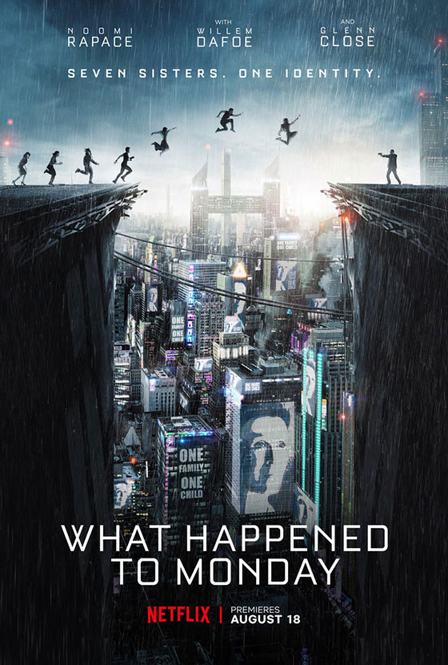
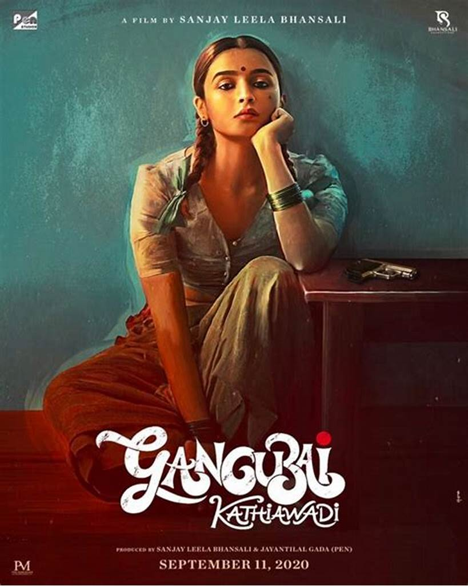
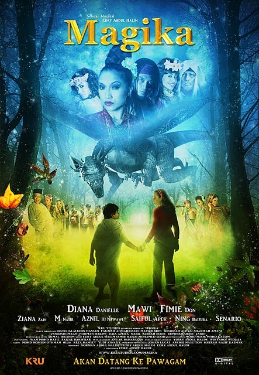

| "Harry Potter and the Prisoner of Azkaban" is a 2004 fantasy film directed by Alfonso Cuarón and written by Steve Kloves, based on the 1999 novel by J.K. Rowling. This movie is the third installment in the series of 8 films. If you haven't seen it yet, I recommend watching the first movie beforehand to fully understand the story. I won't spoil anything, but I chose this movie because, out of all the films, it's the one that resonates with me the most as the main character finally finds a sense of family, which touched my heart. I give it a 10/10 rating and highly recommend it to anyone who enjoys magic and fantasy. |
|  | "What Happened to Monday" (known in some territories as "Seven Sisters") is a 2017 dystopian science fiction action thriller film directed by Tommy Wirkola and written by Max Botkin and Kerry Williamson. The film stars Noomi Rapace, Glenn Close, and Willem Dafoe. The film is set in a world where the population is rapidly increasing, leading to limited food resources. To control the population, the government enforces a one-child policy, with any additional children being taken away. However, a family manages to hide septuplets from the authorities, naming each child after a day of the week. As the septuplets grow up, one of them, Monday, begins to behave suspiciously, leading to a major plot twist. I highly recommend this film for its intriguing and unexpected storyline. I would rate it 9/10." |
| "Our Secret Diary" was released in 2023 and directed by Kentaro Takemura. Nozomi Kuroda (played by Hiyori Sakurada) is a high school sophomore who one day finds a letter with only the word "like" written on it. The letter is from Jun Setoyama (played by Fumiya Takahashi), the most popular boy in school. Despite her embarrassment, Nozomi ends up responding by leaving her answer in the school's shoe closet, starting a secret exchange diary between them. She later discovers that the intended recipient of the first letter was her best friend, but she finds herself drawn to Jun, who is more open with his thoughts and feelings than she is. Jun, however, can't bring himself to reveal that he's the one exchanging messages, not his best friend. The story is romantic, sweet, and cute, and the light-hearted school setting is perfect for fans of high school romance. Overall, I would rate this movie 10/10. |
| "Even if this Love Disappears from the World Tonight" was released in 2022 and directed by Takahiro Miki. The movie tells the story of Toru Kamiya (played by Shunsuke Michieda) who, due to bullying from his classmate, makes a false confession to Maori Hino (played by Riko Fukumoto), telling her that he likes her but setting rules for their relationship, one of which is not to fall in love with each other. Despite this, they start dating and have fun together. However, Toru breaks his own rule and falls in love with Maori. When he confesses his true feelings to her, she reveals that she is ill. Toru, who suffers from memory loss, starts keeping a diary to remember the happy moments with her. The movie has a heavy storyline but still feels romantic between the main characters. The ending is heart-wrenching and tear-jerking, so I recommend having tissues ready before watching. I would rate this movie 8/10. |
|  | "Gangubai Kathiawadi" is a 2022 Indian Hindi-language biographical crime drama film directed by Sanjay Leela Bhansali. The film stars Alia Bhatt in the lead role, with Ajay Devgn, Shantanu Maheshwari, and Vijay Raaz in important roles. This narrative is adapted from the book chapter "Mafia Queens of Mumbai" by S. Hussain Zaidi. The film follows the life of Ganga Harjivandas, who is tricked and sold into prostitution by her lover. Despite the traumatic betrayal, Ganga accepts her fate and rises to power in the underworld. She goes by the name Gangubai and becomes a powerful prostitute in Kamathipura, Mumbai's famous red light district. This story has a heavy plot but has many lessons. This movie inspired me to continue to fight and protect my rights as a woman. My rating for this movie is 8.5/10. |
|
"Kal Ho Naa Ho" is a 2003 Indian Hindi-language romantic drama film directed by Nikkhil Advani, written by Karan Johar, and produced by Yash Johar. The film stars Shah Rukh Khan, Preity Zinta, and Saif Ali Khan in the lead roles, with Jaya Bachchan, Sushma Seth, and Reema Lagoo in supporting roles. The story revolves around Naina Catherine Kapur (Preity Zinta), a serious and pessimistic MBA student living in New York City with her dysfunctional family. Naina's life is turned upside down when Aman Mathur (Shah Rukh Khan) moves into her neighborhood. Aman is a cheerful and optimistic person who gradually brings joy and positivity to Naina's family and their lives. Although at the beginning this story is full of happiness, in fact, there are many sad and touching stories such as family relationships and love sacrifices. My rating for this movie is 8/10. |
| "Istanbul Aku Datang" was released in 2012 and directed by Bernard Chauly. The movie follows Dian (Lisa Surihani), a sweet and naive blogger, who travels to Istanbul to try to convince her medical student boyfriend, Azad (Tomok), to propose to her. However, she unknowingly ends up sharing an apartment with the strange and shy artist Harris (Beto Kusyairy). When Azad discovers the situation and leaves her, Dian must choose whether to pursue Azad or explore her connection with Harris. The story is filled with humor and the transition from enemies to lovers is captivating and heart-pounding. I would rate this movie 8/10. |
|  | "Magika" was released in 2010 and directed by Edry Abdul Halim. It is Malaysia's first musical feature film, and it tells the story of two sisters, Malik (Fimie Don) and Ayu (Diana Danielle), as they embark on an adventure in a real mythical world. In this world, trees, animals, and all flora and fauna can converse, and good and bad are portrayed in a muted, non-violent way. Their fairytale adventure takes them through popular Malay legends and myths, where they meet various characters from Malay folklore such as Orang Bunian, Nenek Kebayan, Jin, Badang, Naga Tasik Chini, Hang Tuah, and others. In the end, Ayu and Malik discover the importance of family in overcoming their fears in the mysterious, magical, and musical world of "Magika". This movie is my favorite childhood movie, and I never get tired of watching it. It is my comfort movie and the best fantasy movie. I would rate this movie 10/10. |